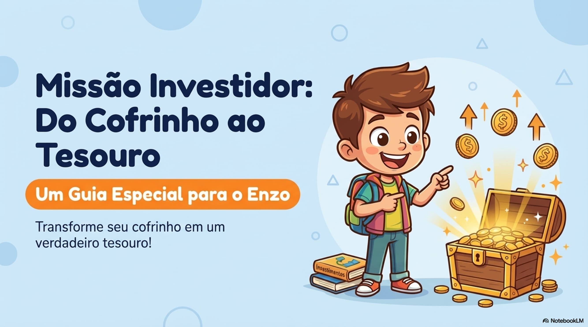
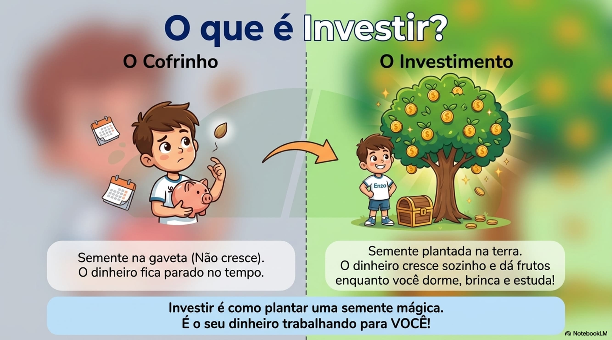
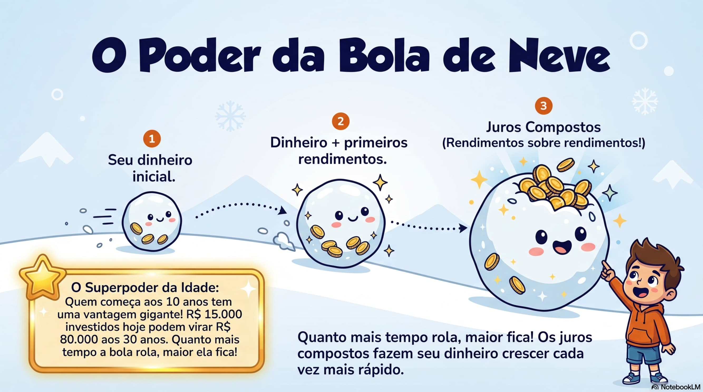
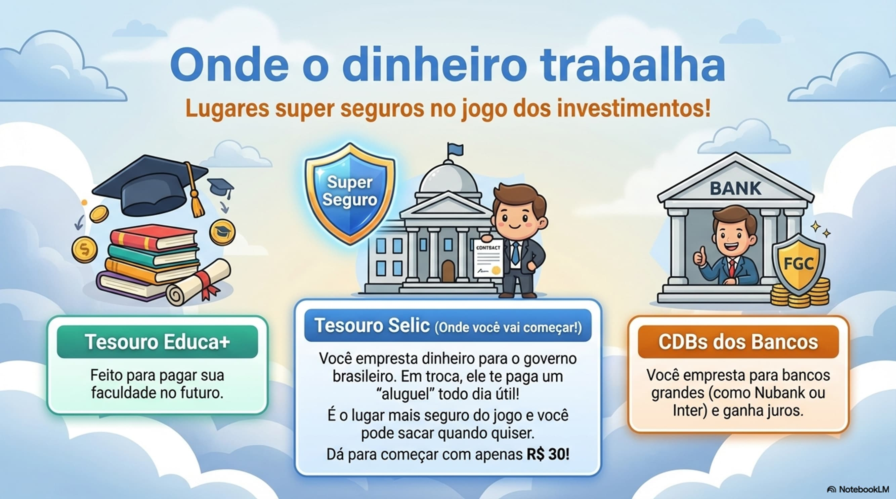
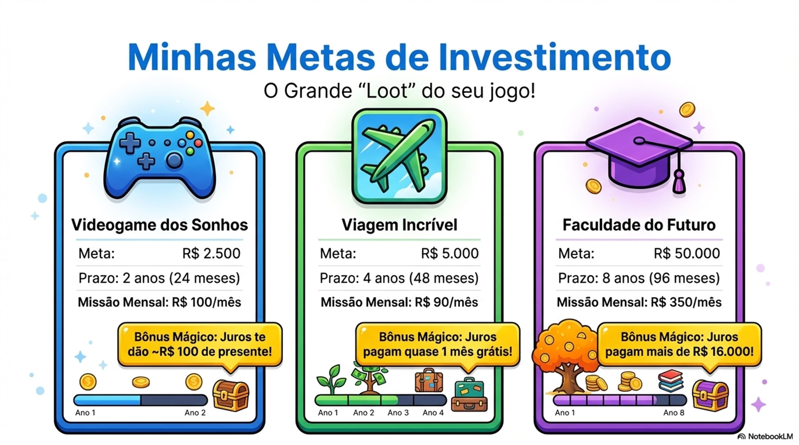
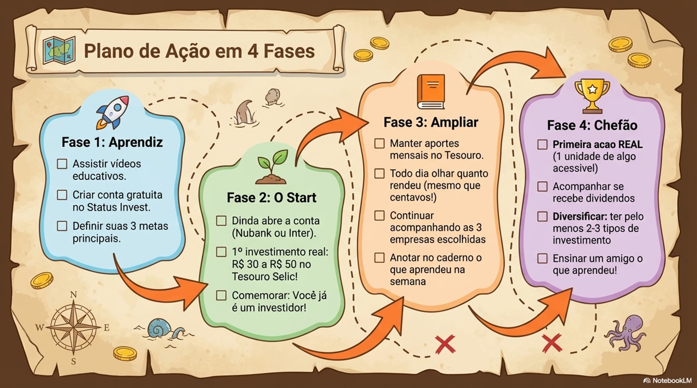
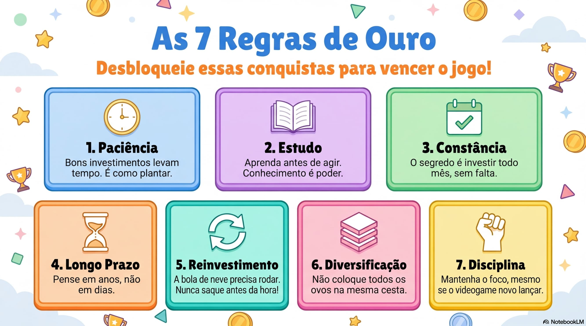
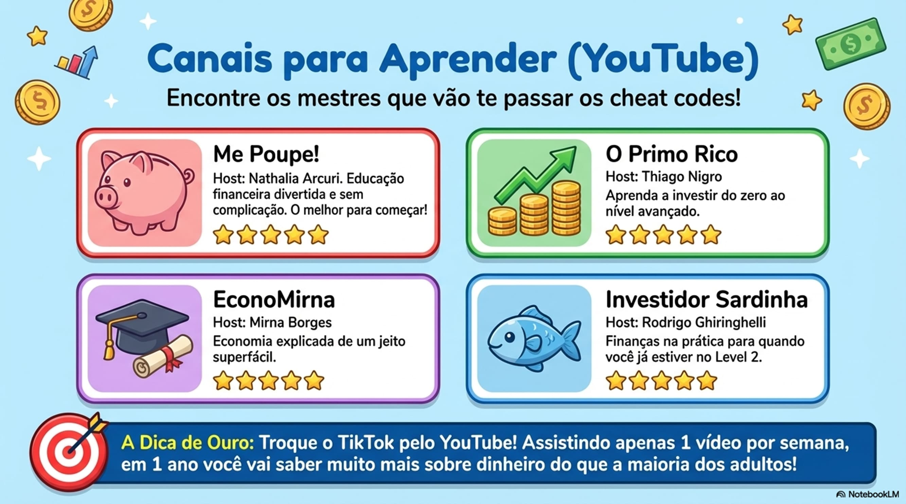
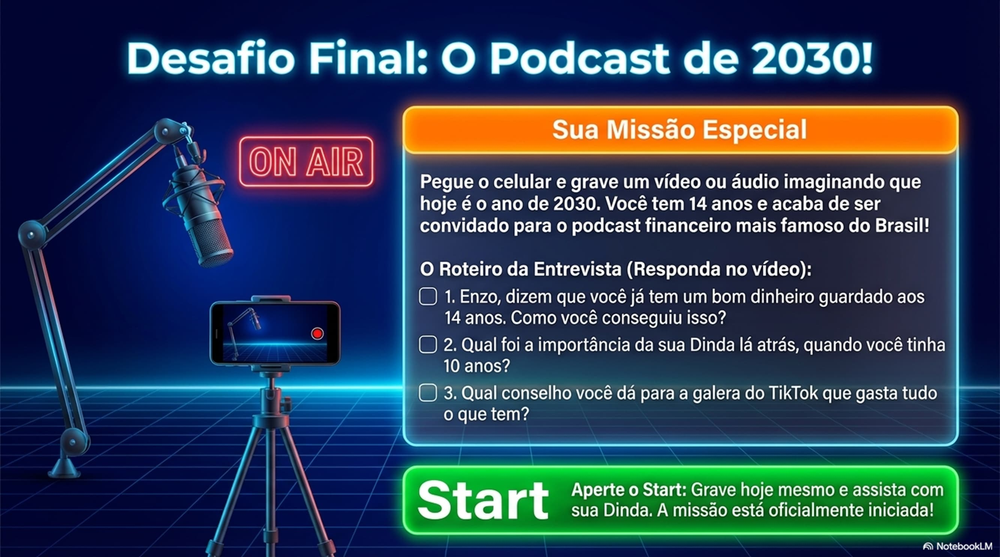

Do Cofrinho ao Tesouro — Um Guia Especial para o Enzo

Deixar o celular um pouco de lado para aprender sobre dinheiro é o passo que vai garantir a sua liberdade no futuro! Enzo, você está prestes a descobrir como fazer o seu dinheiro trabalhar para você.
Tudo começou com uma conversa com a Dinda! Dê o play abaixo para ouvir o podcast original que conta como a ideia surgiu e por que o cofrinho não é o melhor lugar para o seu dinheiro crescer.
Depois de ouvir, acompanhe tudo no Guia e na Planilha abaixo!
O Guia do Investidor Mirim tem tudo o que foi falado no podcast de forma organizada: tipos de investimento, empresas na Bolsa, ferramentas gratuitas, as 7 Regras de Ouro e o seu Plano de Ação em 4 fases!
⬇️ Baixar Guia do Investidor Mirim (PDF)
Investir é como plantar uma semente mágica. Você coloca o seu dinheiro na terra (um investimento), cuida dele com paciência, e com o tempo ele cresce e dá frutos — sozinho!
Pense assim: se você guardar R$ 50 por mês no cofrinho durante 1 ano, terá R$ 600 parados. Mas se investir esses mesmos R$ 50 por mês, no final do ano você terá mais do que R$ 600 — porque cada parcela que você colocou foi crescendo enquanto você dormia, brincava e estudava!

É o efeito bola de neve: começa pequeno, mas vai ficando ENORME com o tempo. Quanto mais cedo você começa, maior a bola fica. E adivinha quem tem a maior vantagem? Você, Enzo! Porque está começando aos 10 anos, quando a maioria das pessoas só vai pensar nisso aos 25 ou 30.
| Situação | No Cofrinho | Investido |
|---|---|---|
| Hoje | R$ 100 | R$ 100 |
| Em 1 ano | R$ 100 (parado) | R$ 110 (+10%) |
| Em 5 anos | R$ 100 (parado) | R$ 161! |
| Idade que Começa | Resultado aos 30 Anos* |
|---|---|
| 10 anos (VOCÊ!) | R$ 15.000 viram R$ 80.000! |
| 15 anos | R$ 15.000 viram R$ 50.000 |
| 20 anos | R$ 15.000 viram R$ 32.000 |
| 25 anos | R$ 15.000 viram R$ 20.000 |
*Exemplo com investimento mensal de R$ 50 e rendimento de 10% ao ano

Existem vários "lugares" onde você pode colocar o seu dinheiro para trabalhar. Cada um funciona de um jeito diferente. Vamos conhecer os 3 principais lugares seguros para começar:
E a Poupança? Ela é segura, mas rende muito pouco comparada às opções acima. É como uma tartaruga numa corrida contra coelhos — chega lá, mas demora muito mais. Por isso o Tesouro Selic é a melhor escolha para começar!

Ter metas claras ajuda a manter o foco! Pode ser um videogame novo, um celular, ou até a faculdade do futuro. Quando você sabe para que está investindo, fica muito mais fácil manter a disciplina todo mês.
| Tipo | O Que É | Risco |
|---|---|---|
| Tesouro Selic | Emprestar dinheiro pro governo | Muito Baixo |
| CDB | Emprestar dinheiro pro banco | Baixo |
| Poupança | Deixar no banco (rende pouco) | Muito Baixo |
| Tipo | O Que É | Risco |
|---|---|---|
| Ações | Comprar um pedacinho de uma empresa | Alto |
| FIIs | Fundos que compram imóveis (shoppings, prédios) | Médio-Alto |
| ETFs | Pacote com várias ações juntas | Médio-Alto |
| Empresa | Código | O Que Faz |
|---|---|---|
| GOGL34 | YouTube, Android, Buscador | |
| Apple | AAPL34 | iPhone, MacBook |
| Meta (Facebook) | M1TA34 | Instagram, WhatsApp |
| Nubank | ROXO34 | Banco digital |
| Petrobras | PETR4 | Petróleo e gasolina |
| Vale | VALE3 | Mineração (ferro) |
Você pode acompanhar essas empresas de graça no Status Invest!
O preço de uma ação muda todo dia. Mas por quê? Entender isso é essencial para não se assustar quando o preço cai — e para saber quando uma empresa está indo bem:
| Faz Subir | Faz Descer |
|---|---|
| Empresa vendeu mais | Empresa vendeu menos |
| Lucro aumentou | Teve prejuízo |
| Lançou produto novo de sucesso | Produto falhou |
| Economia do país vai bem | Crise econômica |
| Muita gente quer comprar a ação | Muita gente quer vender |

O seu plano foi dividido em 4 missões progressivas. Cada fase te prepara para a próxima. Imprima esta página ou marque no caderno conforme for completando!

Estes são os 7 mandamentos que todo investidor de sucesso segue. Cole no espelho, guarde no caderno e nunca esqueça:
Só invista dinheiro que você não vai precisar tão cedo. Sempre tenha uma reserva para emergências — como um dinheiro separado para quando o controle do videogame quebrar!
Investir é como plantar: demora para dar frutos. Não adianta ficar puxando a semente da terra para ver se cresceu. Plante, regue todo mês e deixe o tempo fazer a mágica!
Quanto mais você aprende, melhores decisões toma. Assista vídeos, leia o seu guia, acompanhe as notícias. O conhecimento é o investimento que mais rende na vida!
Não precisa de muito dinheiro. R$ 30 já dá para começar no Tesouro Selic! O importante não é o valor, é o hábito de investir. Começando pequeno você aprende sem medo de errar.
Investir todo mês é mais importante que o valor. R$ 50 por mês, todos os meses, vale mais do que R$ 500 uma vez só e depois parar. A consistência é o superpoder do investidor!
Não coloque todos os ovos na mesma cesta! Se a cesta cair, você perde tudo. Mas se dividir em várias cestas (Tesouro, ações, FIIs), mesmo que uma vá mal, as outras te protegem.
Não se assuste com quedas de curto prazo. A bolsa sobe e desce todo dia — isso é normal! Os melhores investidores são os que mantêm a calma e pensam no longo prazo. Lembra da bola de neve? Ela só cresce se você não parar de rolar!

A Regra 3 diz: estude sempre! Estes canais no YouTube ensinam tudo sobre investimentos de um jeito divertido e fácil de entender. Escolha pelo menos um para acompanhar toda semana:
Nathalia Arcuri
Divertido e com linguagem jovem. Perfeito para quem está começando! Ela explica desde o básico até investimentos avançados de um jeito que parece papo de amigo.
Thiago Nigro
Explicações simples e práticas com exemplos do dia a dia. Ele mostra a própria carteira de investimentos e ensina na prática como tomar decisões.
Mirna Borges
Bem didático para iniciantes. Ideal para entender conceitos como juros compostos, renda fixa e como montar sua primeira carteira sem complicação.
Raul Sena
Focado em ações e análise de empresas. Quando você já estiver na Fase 3 do seu plano, esse canal vai te ajudar a escolher as melhores empresas para investir!
Além dos canais, use estas ferramentas para acompanhar seus investimentos e simular compras sem gastar nada:
Para investir de verdade, você precisa de uma corretora — é o app onde você compra e vende investimentos. Todas abaixo são gratuitas e fáceis de usar:
| Corretora | Por que é Boa | Taxa |
|---|---|---|
| Rico ⭐ | A favorita da Dinda! Muito conteúdo educativo para aprender | Grátis |
| Nubank | Super fácil de usar — você já conhece! | Grátis |
| Inter | App completo, tudo junto num lugar só | Grátis |
| Clear | Simples e direto ao ponto | Grátis |
Todo grande investidor acompanha os seus números! Esta planilha foi feita especialmente para você controlar seus investimentos, anotar quanto investiu, quanto rendeu e acompanhar a sua evolução mês a mês.
Baixe a planilha, abra no celular ou computador, e comece a registrar cada investimento. Ver o seu dinheiro crescendo em números reais é a melhor motivação para continuar!
⬇️ Baixar Planilha de Investimentos (Excel)Antes de investir, domine o vocabulário! Aqui estão os termos que todo investidor precisa saber:

Ano de 2046. Você tem 30 anos, atingiu a total liberdade financeira e não precisa mais trabalhar por obrigação. Tudo porque ouviu a sua dinda aos 10 anos de idade e manteve o foco! Dê o play para ouvir a sua entrevista contando como foi essa jornada:
Antes de encerrar, a Dinda tem algo para te dizer:
Enzo, meu afilhado querido,
Eu montei tudo isso com muito carinho porque acredito demais em você. Enquanto a maioria das crianças da sua idade só pensa em gastar, você está aprendendo a construir o seu futuro. Isso me enche de orgulho!
Não precisa ser perfeito, não precisa entender tudo de uma vez. O que importa é dar o primeiro passo — e você já está dando. Eu vou estar aqui para te ajudar sempre que precisar.
Daqui a 20 anos, quando você tiver conquistado a sua liberdade financeira, vai lembrar que tudo começou aqui, com 10 anos de idade, ouvindo a sua Dinda. E eu vou estar lá para comemorar com você!
Com todo amor, sua Dinda 💙